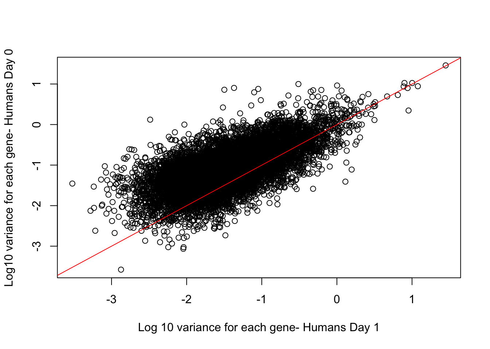

Global_variation
Lauren Blake
November 26, 2016
The goal of this script is to assess the extent of regulatory variation in our cell types.
Check data
# Load libraries
library("ggplot2")## Warning: package 'ggplot2' was built under R version 3.2.4source("~/Desktop/Endoderm_TC/ashlar-trial/analysis/chunk-options.R")## Warning: package 'knitr' was built under R version 3.2.5# Load data
cpm_in_cutoff <- read.delim("~/Desktop/Endoderm_TC/ashlar-trial/data/cpm_norm_data.txt")# Take the mean of the technical replicates when available
# Day 0 technical replicates
D0_28815 <- as.data.frame(apply(cpm_in_cutoff[,5:6], 1, mean))
D0_3647 <- as.data.frame(apply(cpm_in_cutoff[,8:9], 1, mean))
D0_3649 <- as.data.frame(apply(cpm_in_cutoff[,10:11], 1, mean))
D0_40300 <- as.data.frame(apply(cpm_in_cutoff[,12:13], 1, mean))
D0_4955 <- as.data.frame(apply(cpm_in_cutoff[,14:15], 1, mean))
# Day 1 technical replicates
D1_20157 <- as.data.frame(apply(cpm_in_cutoff[,16:17], 1, mean))
D1_28815 <- as.data.frame(apply(cpm_in_cutoff[,21:22], 1, mean))
D1_3647 <- as.data.frame(apply(cpm_in_cutoff[,24:25], 1, mean))
D1_3649 <- as.data.frame(apply(cpm_in_cutoff[,26:27], 1, mean))
D1_40300 <- as.data.frame(apply(cpm_in_cutoff[,28:29], 1, mean))
D1_4955 <- as.data.frame(apply(cpm_in_cutoff[,30:31], 1, mean))
# Day 2 technical replicates
D2_20157 <- as.data.frame(apply(cpm_in_cutoff[,32:33], 1, mean))
D2_28815 <- as.data.frame(apply(cpm_in_cutoff[,37:38], 1, mean))
D2_3647 <- as.data.frame(apply(cpm_in_cutoff[,40:41], 1, mean))
D2_3649 <- as.data.frame(apply(cpm_in_cutoff[,42:43], 1, mean))
D2_40300 <- as.data.frame(apply(cpm_in_cutoff[,44:45], 1, mean))
D2_4955 <- as.data.frame(apply(cpm_in_cutoff[,46:47], 1, mean))
# Day 3 technical replicates
D3_20157 <- as.data.frame(apply(cpm_in_cutoff[,48:49], 1, mean))
D3_28815 <- as.data.frame(apply(cpm_in_cutoff[,53:54], 1, mean))
D3_3647 <- as.data.frame(apply(cpm_in_cutoff[,56:57], 1, mean))
D3_3649 <- as.data.frame(apply(cpm_in_cutoff[,58:59], 1, mean))
D3_40300 <- as.data.frame(apply(cpm_in_cutoff[,60:61], 1, mean))
D3_4955 <- as.data.frame(apply(cpm_in_cutoff[,62:63], 1, mean))
# Create a new data frame with all of the combined technical replicates
mean_tech_reps <- cbind(cpm_in_cutoff[,1:4], D0_28815, cpm_in_cutoff[,7], D0_3647, D0_3649, D0_40300, D0_4955, D1_20157, cpm_in_cutoff[,18:20], D1_28815, cpm_in_cutoff[,23], D1_3647, D1_3649, D1_40300, D1_4955, D2_20157, cpm_in_cutoff[,34:36], D2_28815, cpm_in_cutoff[,39], D2_3647, D2_3649, D2_40300, D2_4955, D3_20157, cpm_in_cutoff[,50:52], D3_28815, cpm_in_cutoff[,55], D3_3647, D3_3649, D3_40300, D3_4955)
colnames(mean_tech_reps) <- c("D0_20157", "D0_20961", "D0_21792", "D0_28162", "D0_28815", "D0_29089", "D0_3647", "D0_3649", "D0_40300", "D0_4955", "D1_20157", "D1_20961", "D1_21792", "D1_28162", "D1_28815", "D1_29089", "D1_3647", "D1_3649", "D1_40300", "D1_4955", "D2_20157", "D2_20961", "D2_21792", "D2_28162", "D2_28815", "D2_29089", "D2_3647", "D2_3649", "D2_40300", "D2_4955", "D3_20157", "D3_20961", "D3_21792", "D3_28162", "D3_28815", "D3_29089", "D3_3647", "D3_3649", "D3_40300", "D3_4955")
dim(mean_tech_reps)[1] 10304 40# Find the technical factors for the biological replicates (no technical replicates)
bio_rep_samplefactors <- read.delim("~/Downloads/samplefactors-filtered.txt", stringsAsFactors=FALSE)
day <- bio_rep_samplefactors$Day
species <- bio_rep_samplefactors$Species
# Make PCA plots with the factors colored by day
pca_genes <- prcomp(t(mean_tech_reps), scale = T, retx = TRUE, center = TRUE)
matrixpca <- pca_genes$x
pc1 <- matrixpca[,1]
pc2 <- matrixpca[,2]
pc3 <- matrixpca[,3]
pc4 <- matrixpca[,4]
pc5 <- matrixpca[,5]
pcs <- data.frame(pc1, pc2, pc3, pc4, pc5)
summary <- summary(pca_genes)
#dev.off()
ggplot(data=pcs, aes(x=pc1, y=pc2, color=as.factor(day+0), shape=species, size=2)) + geom_point() + xlab(paste("PC1 (",(summary$importance[2,1]*100), "% of variance)")) + ylab(paste("PC2 (",(summary$importance[2,2]*100), "% of variance)")) + ggtitle("PCs 1 and 2 of Normalized Data") + guides(color = guide_legend(order=1), size = FALSE, shape = guide_legend(order=2)) + scale_color_discrete(name ="Day") + labs(title = "PCs 1 and 2 from global normalized expression")#ggplotly()Evaluate the variances between day-species pairs
# Calculate the mean for each species-time pair
humans_day0_var <- as.data.frame(apply(as.data.frame(mean_tech_reps[,1:6]),1, var) )
colnames(humans_day0_var) <- c("Variance")
chimps_day0_var <- as.data.frame(apply(as.data.frame(mean_tech_reps[,7:10]),1, var))
colnames(chimps_day0_var) <- c("Variance")
humans_day1_var <- as.data.frame(apply(as.data.frame(mean_tech_reps[,11:16]),1, var))
colnames(humans_day1_var) <- c("Variance")
chimps_day1_var <- as.data.frame(apply(as.data.frame(mean_tech_reps[,17:20]),1, var))
colnames(chimps_day1_var) <- c("Variance")
humans_day2_var <- as.data.frame(apply(as.data.frame(mean_tech_reps[,21:26]),1, var))
colnames(humans_day2_var) <- c("Variance")
chimps_day2_var <- as.data.frame(apply(as.data.frame(mean_tech_reps[,27:30]),1, var))
colnames(chimps_day2_var) <- c("Variance")
humans_day3_var <- as.data.frame(apply(as.data.frame(mean_tech_reps[,31:36]),1, var))
colnames(humans_day3_var) <- c("Variance")
chimps_day3_var <- as.data.frame(apply(as.data.frame(mean_tech_reps[,37:40]),1, var))
colnames(chimps_day3_var) <- c("Variance")
humans_day0_mean <- apply(as.data.frame(mean_tech_reps[,1:6]),1, mean)
chimps_day0_mean <- apply(as.data.frame(mean_tech_reps[,7:10]),1, mean)
humans_day1_mean <- apply(as.data.frame(mean_tech_reps[,11:16]),1, mean)
chimps_day1_mean <- apply(as.data.frame(mean_tech_reps[,17:20]),1, mean)
humans_day2_mean <- apply(as.data.frame(mean_tech_reps[,21:26]),1, mean)
chimps_day2_mean <- apply(as.data.frame(mean_tech_reps[,27:30]),1, mean)
humans_day3_mean <- apply(as.data.frame(mean_tech_reps[,31:36]),1, mean)
chimps_day3_mean <- apply(as.data.frame(mean_tech_reps[,37:40]),1, mean)
# Make arrays with all the means
labels1 <- array("Chimp Day 0", dim = c(10304, 1))
labels2 <- array("Chimp Day 1", dim = c(10304, 1))
labels3 <- array("Chimp Day 2", dim = c(10304, 1))
labels4 <- array("Chimp Day 3", dim = c(10304, 1))
labels5 <- array("Human Day 0", dim = c(10304, 1))
labels6 <- array("Human Day 1", dim = c(10304, 1))
labels7 <- array("Human Day 2", dim = c(10304, 1))
labels8 <- array("Human Day 3", dim = c(10304, 1))
# Make species-day labels
labels9 <- rbind(labels1, labels2, labels3, labels4, labels5, labels6, labels7, labels8)
labels <- as.numeric(as.factor(labels9))
# Make labels so same days from different species are the same color
labels10 <- rbind(labels1, labels2, labels3, labels4, labels1, labels2, labels3, labels4)
labels10 <- as.numeric(as.factor(labels10))
#1 Overall trend across genes
# Boxplot of variances gives general trend
HC_var <- rbind(as.data.frame(chimps_day0_var), as.data.frame(chimps_day1_var), as.data.frame(chimps_day2_var), as.data.frame(chimps_day3_var), as.data.frame(humans_day0_var), as.data.frame(humans_day1_var), as.data.frame(humans_day2_var), as.data.frame(humans_day3_var))
HC_var_labels <- cbind(HC_var, labels, labels10)
p <- ggplot(HC_var_labels, aes(x = factor(labels), y = HC_var))
p <- p + geom_violin(aes(fill = factor(labels10)), show.legend = FALSE) + geom_boxplot(aes(fill = factor(labels10)), show.legend = FALSE, outlier.shape = NA,width=0.2) + scale_y_continuous(trans = "log2") + ggtitle("Variance for each gene by species and day") + xlab("Species-Day Pair") + ylab("Variance for each gene")
p <- p + scale_x_discrete(labels=c("1" = "C Day 0", "2" = "C Day 1", "3" = "C Day 2", "4" = "C Day 3", "5" = "H Day 0", "6" = "H Day 1", "7" = "H Day 2", "8" = "H Day 3"))
p
Check to see if differences between means within humans and chimps
########## Within chimps ##########
# Test at least one of the means is different
group <- rbind(labels1, labels2, labels3, labels4)
var_day_species <- rbind(chimps_day0_var,chimps_day1_var, chimps_day2_var, chimps_day3_var)
aov_groups <- cbind(var_day_species, group)
dim(aov_groups)[1] 41216 2aov_bet <- oneway.test(aov_groups$Variance ~ aov_groups$group)
aov_bet
One-way analysis of means (not assuming equal variances)
data: aov_groups$Variance and aov_groups$group
F = 16.803, num df = 3, denom df = 22848, p-value = 6.715e-11# F = 16.803, num df = 3, denom df = 22848, p-value = 6.715e-11
# Test groups individually
# Day 0 and Day 1
t.test(chimps_day0_var, chimps_day1_var) # 0.4586
Welch Two Sample t-test
data: chimps_day0_var and chimps_day1_var
t = 0.74112, df = 20602, p-value = 0.4586
alternative hypothesis: true difference in means is not equal to 0
95 percent confidence interval:
-0.009003645 0.019951877
sample estimates:
mean of x mean of y
0.1066976 0.1012235 t.test(chimps_day0_var, chimps_day1_var, alternative = "greater")
Welch Two Sample t-test
data: chimps_day0_var and chimps_day1_var
t = 0.74112, df = 20602, p-value = 0.2293
alternative hypothesis: true difference in means is greater than 0
95 percent confidence interval:
-0.006675837 Inf
sample estimates:
mean of x mean of y
0.1066976 0.1012235 # Day 1 and Day 2
t.test(chimps_day1_var, chimps_day2_var) # 0.03103
Welch Two Sample t-test
data: chimps_day1_var and chimps_day2_var
t = -2.1569, df = 20602, p-value = 0.03103
alternative hypothesis: true difference in means is not equal to 0
95 percent confidence interval:
-0.030404332 -0.001453377
sample estimates:
mean of x mean of y
0.1012235 0.1171524 # Day 2 and Day 3
t.test(chimps_day2_var, chimps_day3_var) # 2.992e-06
Welch Two Sample t-test
data: chimps_day2_var and chimps_day3_var
t = -4.6727, df = 19996, p-value = 2.992e-06
alternative hypothesis: true difference in means is not equal to 0
95 percent confidence interval:
-0.05354353 -0.02189784
sample estimates:
mean of x mean of y
0.1171524 0.1548730 ########## Within humans ##########
# Test at least one of the means is different
group <- rbind(labels5, labels6, labels7, labels8)
var_day_species <- rbind(humans_day0_var,humans_day1_var, humans_day2_var, humans_day3_var)
aov_groups <- cbind(var_day_species, group)
dim(aov_groups)[1] 41216 2aov_bet <- oneway.test(aov_groups$Variance ~ aov_groups$group)
aov_bet
One-way analysis of means (not assuming equal variances)
data: aov_groups$Variance and aov_groups$group
F = 80.035, num df = 3, denom df = 22652, p-value < 2.2e-16# F = 80.035, num df = 3, denom df = 22652, p-value < 2.2e-16
# Test groups individually
# Day 0 and Day 1
t.test(humans_day0_var, humans_day1_var) # < 2.2e-16
Welch Two Sample t-test
data: humans_day0_var and humans_day1_var
t = 13.533, df = 19259, p-value < 2.2e-16
alternative hypothesis: true difference in means is not equal to 0
95 percent confidence interval:
0.0768552 0.1028897
sample estimates:
mean of x mean of y
0.18524994 0.09537748 # Day 1 and Day 2
t.test(humans_day1_var, humans_day2_var) # < 2.2e-16
Welch Two Sample t-test
data: humans_day1_var and humans_day2_var
t = -8.765, df = 20334, p-value < 2.2e-16
alternative hypothesis: true difference in means is not equal to 0
95 percent confidence interval:
-0.05783207 -0.03669358
sample estimates:
mean of x mean of y
0.09537748 0.14264030 # Day 2 and Day 3
t.test(humans_day2_var, humans_day3_var) # 7.301e-07
Welch Two Sample t-test
data: humans_day2_var and humans_day3_var
t = -4.9549, df = 18769, p-value = 7.301e-07
alternative hypothesis: true difference in means is not equal to 0
95 percent confidence interval:
-0.04229841 -0.01831887
sample estimates:
mean of x mean of y
0.1426403 0.1729489 Conclusion: For both species, there is at least 1 mean (of the variances) that is different; however, when testing between the chimps day 0 and 1, there is not enough statistical evidence to suggest a difference in the means of the variances (p = 0.4586). Even if you make the argument that biologically we expect a reduction in variance between day 0 an dday 1 (due to cannalization, for example) and therefore try a one-sided t-test, the p-value is still not statistically significant (p = 0.2293).
Let’s see if we can parse out which genes do experience a reduction in variance between day 0 and day 1
#2 Gene-specific trend
humans_day0_var <- apply(as.data.frame(mean_tech_reps[,1:6]),1, var)
chimps_day0_var <-apply(as.data.frame(mean_tech_reps[,7:10]),1, var)
humans_day1_var <- apply(as.data.frame(mean_tech_reps[,11:16]),1, var)
chimps_day1_var <- apply(as.data.frame(mean_tech_reps[,17:20]),1, var)
# Chimps: some genes have a higher variance at day 0 than day 1
plot(log10(chimps_day1_var), log10(chimps_day0_var), ylab = "Log10 variance for each gene- Chimps Day 0", xlab = "Log 10 variance for each gene- Chimps Day 1", main = "Per gene variance for Chimps")
abline(0,1, col = "red")cor.test(log10(chimps_day1_var), log10(chimps_day0_var), method = "spearman")
Spearman's rank correlation rho
data: log10(chimps_day1_var) and log10(chimps_day0_var)
S = 8.8596e+10, p-value < 2.2e-16
alternative hypothesis: true rho is not equal to 0
sample estimates:
rho
0.5140996 # Humans: more genes have a higher variance at day 0 than day 1
plot(log10(humans_day1_var), log10(humans_day0_var), ylab = "Log10 variance for each gene- Humans Day 0", xlab = "Log 10 variance for each gene- Humans Day 1")
abline(0,1, col = "red")
cor.test(log10(humans_day1_var), log10(humans_day0_var), method = "spearman")
Spearman's rank correlation rho
data: log10(humans_day1_var) and log10(humans_day0_var)
S = 6.821e+10, p-value < 2.2e-16
alternative hypothesis: true rho is not equal to 0
sample estimates:
rho
0.6259078 Find genes for which variance in day 0 is higher than the variance for day 1
# Notes from Joyce
## For each gene, gene-specific difference in variance, a nonparametric test - Kruskal.test
#kruskal.test(log10(as.data.frame(chimps_day1_var)[1,1]), log10(as.data.frame(chimps_day0_var)[1,1]))
# We are going to first use a parametric test
# Variance in day 0 > var in day 1
############# Chimps #####################
# Make an array to store the p-values
chimp_var_pval <- array(NA, dim = c(10304, 1))
for(i in 1:10304){
x <- t(mean_tech_reps[i,7:10])
y <- t(mean_tech_reps[i,17:20])
htest <- var.test(x, y, alternative = c("greater"))
chimp_var_pval[i,1] <- htest$p.value
}
hist(chimp_var_pval)############## For humans
human_var_pval <- array(NA, dim = c(10304, 1))
for(i in 1:10304){
x <- t(mean_tech_reps[i,1:6])
y <- t(mean_tech_reps[i,11:16])
htest <- var.test(x, y, alternative = c("greater"))
human_var_pval[i,1] <- htest$p.value
}
hist(human_var_pval)
############ Find overlap
# Make one data frame
var_pval <- as.data.frame(cbind(chimp_var_pval, human_var_pval))
rownames(var_pval) <- rownames(mean_tech_reps)
dim(var_pval)[1] 10304 2# P-val < 0.05 for chimps only
num_var_pval_chimps <- var_pval[ which(var_pval[,1] < 0.05), ]
dim(num_var_pval_chimps)[1] 612 2# P-val < 0.05 for humans only
num_var_pval_humans <- var_pval[ which(var_pval[,2] < 0.05), ]
dim(num_var_pval_humans)[1] 2289 2# Note: there are 612 with p-val < 0.05 in the chimps and 2,289 with p-val < 0.05 in the humans.
# P-val < 0.05 for both humans and chimps (tested separately)
num_var_pval <- var_pval[ which(var_pval[,1] < 0.05 & var_pval[,2] < 0.05), ]
dim(num_var_pval)[1] 159 2# See the gene names of the 159 that overlap
rownames(num_var_pval) [1] "ENSG00000005206" "ENSG00000005810" "ENSG00000008300"
[4] "ENSG00000011478" "ENSG00000034063" "ENSG00000048162"
[7] "ENSG00000053372" "ENSG00000055070" "ENSG00000063587"
[10] "ENSG00000063978" "ENSG00000065243" "ENSG00000065320"
[13] "ENSG00000067829" "ENSG00000071462" "ENSG00000076201"
[16] "ENSG00000083312" "ENSG00000083937" "ENSG00000084112"
[19] "ENSG00000085644" "ENSG00000088451" "ENSG00000089248"
[22] "ENSG00000090905" "ENSG00000090924" "ENSG00000091656"
[25] "ENSG00000095951" "ENSG00000096433" "ENSG00000099381"
[28] "ENSG00000100243" "ENSG00000100422" "ENSG00000100503"
[31] "ENSG00000100526" "ENSG00000100764" "ENSG00000101421"
[34] "ENSG00000103222" "ENSG00000103335" "ENSG00000103381"
[37] "ENSG00000104365" "ENSG00000104369" "ENSG00000105221"
[40] "ENSG00000105364" "ENSG00000105647" "ENSG00000105663"
[43] "ENSG00000105669" "ENSG00000106105" "ENSG00000106261"
[46] "ENSG00000107831" "ENSG00000108021" "ENSG00000108591"
[49] "ENSG00000109265" "ENSG00000109320" "ENSG00000109519"
[52] "ENSG00000110514" "ENSG00000113732" "ENSG00000114745"
[55] "ENSG00000115484" "ENSG00000116990" "ENSG00000117500"
[58] "ENSG00000119431" "ENSG00000120314" "ENSG00000121879"
[61] "ENSG00000124207" "ENSG00000124275" "ENSG00000124608"
[64] "ENSG00000126883" "ENSG00000127947" "ENSG00000128607"
[67] "ENSG00000130520" "ENSG00000131165" "ENSG00000131966"
[70] "ENSG00000132467" "ENSG00000133243" "ENSG00000133619"
[73] "ENSG00000133937" "ENSG00000134318" "ENSG00000134452"
[76] "ENSG00000134882" "ENSG00000135476" "ENSG00000135637"
[79] "ENSG00000135643" "ENSG00000136051" "ENSG00000137822"
[82] "ENSG00000138303" "ENSG00000138650" "ENSG00000139233"
[85] "ENSG00000139436" "ENSG00000139613" "ENSG00000140391"
[88] "ENSG00000141503" "ENSG00000141568" "ENSG00000142166"
[91] "ENSG00000148337" "ENSG00000149308" "ENSG00000151779"
[94] "ENSG00000152749" "ENSG00000152782" "ENSG00000153317"
[97] "ENSG00000155868" "ENSG00000158815" "ENSG00000161999"
[100] "ENSG00000162458" "ENSG00000162664" "ENSG00000162931"
[103] "ENSG00000163104" "ENSG00000163508" "ENSG00000163602"
[106] "ENSG00000163607" "ENSG00000163930" "ENSG00000164068"
[109] "ENSG00000164091" "ENSG00000164327" "ENSG00000164651"
[112] "ENSG00000164741" "ENSG00000165138" "ENSG00000165617"
[115] "ENSG00000166147" "ENSG00000166716" "ENSG00000167333"
[118] "ENSG00000167395" "ENSG00000167595" "ENSG00000168101"
[121] "ENSG00000168398" "ENSG00000169490" "ENSG00000170584"
[124] "ENSG00000171570" "ENSG00000173456" "ENSG00000173915"
[127] "ENSG00000176383" "ENSG00000176624" "ENSG00000177200"
[130] "ENSG00000177731" "ENSG00000177879" "ENSG00000179918"
[133] "ENSG00000181638" "ENSG00000182325" "ENSG00000182473"
[136] "ENSG00000183751" "ENSG00000183873" "ENSG00000184381"
[139] "ENSG00000185798" "ENSG00000185800" "ENSG00000186638"
[142] "ENSG00000187097" "ENSG00000187535" "ENSG00000187555"
[145] "ENSG00000188735" "ENSG00000188931" "ENSG00000189376"
[148] "ENSG00000196072" "ENSG00000198176" "ENSG00000198198"
[151] "ENSG00000198793" "ENSG00000204271" "ENSG00000204304"
[154] "ENSG00000204681" "ENSG00000223501" "ENSG00000228449"
[157] "ENSG00000233589" "ENSG00000240857" "ENSG00000258056"Conclusion: 612 genes undergo a reduction in variance in the chimps between day 0 and day 1 (cutoff of p-value < 0.05) and 2,289 genes undergo a reduction in variance in the humans between day 0 and day 1 (cutoff of p-value < 0.05). The overlap number of genes that undergo a reduction in variance between day 0 and day 1 in the chimps as well as the humans (calculated separately from above) is 159.
Is the difference in variance between day 0 and day 1 being driven by differences in means?
This is an important check because prior observation shows that in RNA-seq data, higher expression tends to have higher variance.
# Variance-mean dependency genome wide
############### Chimps
# day0 and day1
fit_day0 <- lm(chimps_day0_var ~ chimps_day0_mean)
fit_day1 <- lm(chimps_day1_var ~ chimps_day1_mean)
fit_day0; fit_day1
Call:
lm(formula = chimps_day0_var ~ chimps_day0_mean)
Coefficients:
(Intercept) chimps_day0_mean
0.38461 -0.05323
Call:
lm(formula = chimps_day1_var ~ chimps_day1_mean)
Coefficients:
(Intercept) chimps_day1_mean
0.33044 -0.04377 par(mfrow = c(1,2))
plot(x = chimps_day0_mean, y = sqrt(chimps_day0_var))
l1 <- lowess(chimps_day0_mean, chimps_day0_var)
lines(l1, col = "red")
plot(x = chimps_day1_mean, y = sqrt(chimps_day1_var))
l0 <- lowess(chimps_day1_mean, chimps_day1_var)
lines(l0, col = "red")############### Humans
# day0 and day1
fit_day0 <- lm(humans_day0_var ~ humans_day0_mean)
fit_day1 <- lm(humans_day1_var ~ humans_day1_mean)
fit_day0; fit_day1
Call:
lm(formula = humans_day0_var ~ humans_day0_mean)
Coefficients:
(Intercept) humans_day0_mean
0.55722 -0.07037
Call:
lm(formula = humans_day1_var ~ humans_day1_mean)
Coefficients:
(Intercept) humans_day1_mean
0.30728 -0.04002 par(mfrow = c(1,2))
plot(x = humans_day0_mean, y = sqrt(humans_day0_var))
l1 <- lowess(humans_day0_mean, humans_day0_var)
lines(l1, col = "red")
plot(x = humans_day1_mean, y = sqrt(humans_day1_var))
l0 <- lowess(humans_day1_mean, humans_day1_var)
lines(l0, col = "red")### What about in the genes that show a reduction in variance between days 0 and 1?
# Find the genes that show a reduction in variance in chimps
inshared_lists = row.names(mean_tech_reps) %in% rownames(num_var_pval_chimps)
inshared_lists_data <- as.data.frame(inshared_lists)
counts_genes_in <- cbind(mean_tech_reps, inshared_lists_data)
counts_genes_in_cutoff <- subset(counts_genes_in, inshared_lists_data == "TRUE")
norm_exp_chimp_612 <- counts_genes_in_cutoff[,1:40]
# Find the genes that show a reduction in variance in humans
inshared_lists = row.names(mean_tech_reps) %in% rownames(num_var_pval_humans)
inshared_lists_data <- as.data.frame(inshared_lists)
counts_genes_in <- cbind(mean_tech_reps, inshared_lists_data)
counts_genes_in_cutoff <- subset(counts_genes_in, inshared_lists_data == "TRUE")
norm_exp_human_2289 <- counts_genes_in_cutoff[,1:40]
# Define chimp and human means and variances
# Means
norm_exp_human_2289_day0_mean <- apply(as.data.frame(norm_exp_human_2289[,1:6]),1, mean)
norm_exp_chimp_612_day0_mean <-apply(as.data.frame(norm_exp_chimp_612[,7:10]),1, mean)
norm_exp_human_2289_day1_mean <- apply(as.data.frame(norm_exp_human_2289[,11:16]),1, mean)
norm_exp_chimp_612_day1_mean <- apply(as.data.frame(norm_exp_chimp_612[,17:20]),1, mean)
# Variances
norm_exp_human_2289_day0_var <- apply(as.data.frame(norm_exp_human_2289[,1:6]),1, var)
norm_exp_chimp_612_day0_var <-apply(as.data.frame(norm_exp_chimp_612[,7:10]),1, var)
norm_exp_human_2289_day1_var <- apply(as.data.frame(norm_exp_human_2289[,11:16]),1, var)
norm_exp_chimp_612_day1_var <- apply(as.data.frame(norm_exp_chimp_612[,17:20]),1, var)
############### Chimps
# day0 and day1
fit_day0 <- lm(norm_exp_chimp_612_day0_var ~ norm_exp_chimp_612_day0_mean)
fit_day1 <- lm(norm_exp_chimp_612_day1_var ~ norm_exp_chimp_612_day1_mean)
fit_day0; fit_day1
Call:
lm(formula = norm_exp_chimp_612_day0_var ~ norm_exp_chimp_612_day0_mean)
Coefficients:
(Intercept) norm_exp_chimp_612_day0_mean
0.8355 -0.1250
Call:
lm(formula = norm_exp_chimp_612_day1_var ~ norm_exp_chimp_612_day1_mean)
Coefficients:
(Intercept) norm_exp_chimp_612_day1_mean
0.025744 -0.002724 par(mfrow = c(1,2))
plot(x = norm_exp_chimp_612_day0_mean, y = sqrt(norm_exp_chimp_612_day0_var))
l1 <- lowess(norm_exp_chimp_612_day0_mean, norm_exp_chimp_612_day0_var)
lines(l1, col = "red")
plot(x = norm_exp_chimp_612_day1_mean, y = sqrt(norm_exp_chimp_612_day1_var))
l0 <- lowess(norm_exp_chimp_612_day1_mean, norm_exp_chimp_612_day1_var)
lines(l0, col = "red")############### Humans
# day0 and day1
fit_day0 <- lm(norm_exp_human_2289_day0_var ~ norm_exp_human_2289_day0_mean)
fit_day1 <- lm(norm_exp_human_2289_day1_var ~ norm_exp_human_2289_day1_mean)
fit_day0; fit_day1
Call:
lm(formula = norm_exp_human_2289_day0_var ~ norm_exp_human_2289_day0_mean)
Coefficients:
(Intercept) norm_exp_human_2289_day0_mean
1.0134 -0.1299
Call:
lm(formula = norm_exp_human_2289_day1_var ~ norm_exp_human_2289_day1_mean)
Coefficients:
(Intercept) norm_exp_human_2289_day1_mean
0.067248 -0.006535 par(mfrow = c(1,2))
plot(x = norm_exp_human_2289_day0_mean, y = sqrt(norm_exp_human_2289_day0_var))
l1 <- lowess(norm_exp_human_2289_day0_mean, norm_exp_human_2289_day0_var)
lines(l1, col = "red")
plot(x = norm_exp_human_2289_day1_mean, y = sqrt(norm_exp_human_2289_day1_var))
l0 <- lowess(norm_exp_human_2289_day0_mean, norm_exp_human_2289_day0_var)
lines(l0, col = "red")
dev.off()null device
1 # Look at this genomewide
HC_var <- cbind((chimps_day1_mean - chimps_day0_mean), chimps_day1_var-chimps_day0_var)
plot(HC_var, xlab = "Differences in Means (Day 1 - Day 0)", ylab = "Differences in Variances (Day 1 - Day 0)", main = "Variances and Means in Day 1 compared to Day 0 in Chimps")
HC_var <- cbind((humans_day1_mean - humans_day0_mean), humans_day1_var-humans_day0_var)
plot(HC_var, xlab = "Differences in Means (Day 1 - Day 0)", ylab = "Differences in Variances (Day 1 - Day 0)", main = "Variances and Means in Day 1 compared to Day 0 in Humans")
# An example gene
#iimean_day1GTday0 <- humans_day1_mean - humans_day0_mean
#iivar_day1GTday0 <- humans_day1_var - humans_day0_var
#ii_gene <- iimean_day1GTday0 > 0 & iivar_day1GTday0 < 0
#ii_gene_df <- as.data.frame(ii_gene)
#high_mean_low_var <- ii_gene_df[which(ii_gene_df == "TRUE") , ]
#head(which(ii_gene))
#iimean_day1GTday0[2]; iivar_day1GTday0[2]
#ii_expr <- unlist(mean_tech_reps[2, ])
#boxplot(c(ii_expr[1:6]), c(ii_expr[11:16]), ylab = "log2 normalized expression for ENSG00000000419", xlab = "Day", "Gene")We can see that there are a number of genes where the mean is higher in day 1 than day 0 but the variance is lower in day 1 than day 0.
### Let's look at these within the genes that have been previously identified as having a reduction in variance between day 0 and day 1
# In chimps
HC_var <- cbind((norm_exp_chimp_612_day1_mean - norm_exp_chimp_612_day0_mean), norm_exp_chimp_612_day1_var-norm_exp_chimp_612_day0_var)
plot(HC_var, xlab = "Differences in Means (Day 1 - Day 0)", ylab = "Differences in Variances (Day 1 - Day 0)", main = "Variances and Means in Day 1 compared to Day 0 in Chimps (Subset)")iimean_day1GTday0_chimps <- norm_exp_chimp_612_day1_mean - norm_exp_chimp_612_day0_mean
iivar_day1GTday0_chimps <- norm_exp_chimp_612_day1_var - norm_exp_chimp_612_day0_var
ii_gene <- iimean_day1GTday0_chimps > 0 & iivar_day1GTday0_chimps < 0
ii_gene_df <- as.data.frame(ii_gene)
high_mean_low_var_chimps <- as.data.frame(ii_gene_df[which(ii_gene_df == "TRUE") , ])
high_mean_low_var_chimps <- as.data.frame(high_mean_low_var_chimps)
# 341 genes
head(which(ii_gene))ENSG00000005810 ENSG00000006025 ENSG00000009830 ENSG00000011114
2 4 11 12
ENSG00000011426 ENSG00000011478
13 14 iimean_day1GTday0_chimps[2]; iivar_day1GTday0_chimps[2]ENSG00000005810
0.2646586 ENSG00000005810
-0.08526825 exp <- as.data.frame(mean_tech_reps[grepl("ENSG00000005810", rownames(mean_tech_reps)), ])
ii_expr <- unlist(exp)
boxplot(c(ii_expr[7:10]), c(ii_expr[17:20]), ylab = "log2 normalized expression", main = "Gene expression for ENSG00000005810 (Chimps)", xaxt="n", xlab = "Day")
axis(1, at=1:2, labels=c("Day 0", "Day 1"))# In humans
HC_var <- cbind((norm_exp_human_2289_day1_mean - norm_exp_human_2289_day0_mean), norm_exp_human_2289_day1_var - norm_exp_human_2289_day0_var)
plot(HC_var, xlab = "Differences in Means (Day 1 - Day 0)", ylab = "Differences in Variances (Day 1 - Day 0)", main = "Variances and Means in Day 1 compared to Day 0 in Humans (Subset)")iimean_day1GTday0_humans <- norm_exp_human_2289_day1_mean - norm_exp_human_2289_day0_mean
iivar_day1GTday0_humans <- norm_exp_human_2289_day1_var - norm_exp_human_2289_day0_var
ii_gene <- iimean_day1GTday0_humans > 0 & iivar_day1GTday0_humans < 0
ii_gene_df <- as.data.frame(ii_gene)
high_mean_low_var <- ii_gene_df[which(ii_gene_df == "TRUE") , ]
# 1,283 genes
head(which(ii_gene))ENSG00000000419 ENSG00000003393 ENSG00000004059 ENSG00000004142
2 4 5 6
ENSG00000004487 ENSG00000004975
7 9 iimean_day1GTday0_humans[2]; iivar_day1GTday0_humans[2]ENSG00000000419
0.3050568 ENSG00000000419
-0.1042365 ii_expr <- unlist(mean_tech_reps[2, ])
boxplot(c(ii_expr[1:6]), c(ii_expr[11:16]), xaxt="n", ylab = "log2 normalized expression", main = "Gene expression for ENSG00000000419 (Humans)", xlab = "Day")
axis(1, at=1:2, labels=c("Day 0", "Day 1"))# In humans and chimps
inshared_lists = row.names(mean_tech_reps) %in% rownames(num_var_pval)
inshared_lists_data <- as.data.frame(inshared_lists)
counts_genes_in <- cbind(mean_tech_reps, inshared_lists_data)
counts_genes_in_cutoff <- subset(counts_genes_in, inshared_lists_data == "TRUE")
over_gene_red_var <- counts_genes_in_cutoff[,1:40]
# Define chimp and human means and variances
# Means
over_human_day0_mean <- apply(as.data.frame(over_gene_red_var[,1:6]),1, mean)
over_chimp_day0_mean <-apply(as.data.frame(over_gene_red_var[,7:10]),1, mean)
over_human_day1_mean <- apply(as.data.frame(over_gene_red_var[,11:16]),1, mean)
over_chimp_day1_mean <- apply(as.data.frame(over_gene_red_var[,17:20]),1, mean)
# Variances
over_human_day0_var <- apply(as.data.frame(over_gene_red_var[,1:6]),1, var)
over_chimp_day0_var <-apply(as.data.frame(over_gene_red_var[,7:10]),1, var)
over_human_day1_var <- apply(as.data.frame(over_gene_red_var[,11:16]),1, var)
over_chimp_day1_var <- apply(as.data.frame(over_gene_red_var[,17:20]),1, var)
iimean_day1GTday0_chimps <- over_chimp_day1_mean - over_chimp_day0_mean
iivar_day1GTday0_chimps <- over_chimp_day1_var - over_chimp_day0_var
iimean_day1GTday0_humans <- over_human_day1_mean - over_chimp_day0_mean
iivar_day1GTday0_humans <- over_human_day1_var - over_chimp_day0_var
ii_gene <- iimean_day1GTday0_chimps > 0 & iivar_day1GTday0_chimps < 0 & iimean_day1GTday0_humans > 0 & iivar_day1GTday0_humans < 0
ii_gene_df <- as.data.frame(ii_gene)
high_mean_low_var <- ii_gene_df[which(ii_gene_df == "TRUE") , ]
# 78 genes
head(which(ii_gene))ENSG00000005810 ENSG00000011478 ENSG00000034063 ENSG00000053372
2 4 5 7
ENSG00000055070 ENSG00000063587
8 9 #iimean_day1GTday0[4]; iivar_day1GTday0[4]
ii_expr <- unlist(over_gene_red_var[4, ])
boxplot(c(ii_expr[7:10]), c(ii_expr[17:20]), c(ii_expr[1:6]), c(ii_expr[11:16]), ylab = "log2 normalized expression", xaxt="n", main = "Gene expression for ENSG00000011478", xlab = "Species-Day Pair")
axis(1, at=1:4, labels=c("C Day 0", "C Day 1", "H Day 0", "H Day 1"))#3.2 Driven by expression background
# for lowly expressed genes, more difference in variance
# Genomewide chimps
HC_var <- cbind((chimps_day1_mean + chimps_day0_mean)/2, chimps_day1_var-chimps_day0_var)
plot(HC_var, xlab = "(log2 expression mean day 0 + log2 expression mean day 1) / 2", ylab = "Difference in variance (Day 1-Day 0)", main = "Relationship between background and variance differences (chimps, all genes)")# Genomewide humans
HC_var <- cbind((humans_day1_mean + humans_day0_mean)/2, humans_day1_var-humans_day0_var)
plot(HC_var, xlab = "(log2 expression mean day 0 + log2 expression mean day 1) / 2", ylab = "Difference in variance (Day 1-Day 0)", main = "Relationship bet. background and variance differences (humans, all genes)")# Significantly reduced variance in chimps
HC_var <- cbind((norm_exp_chimp_612_day1_mean + norm_exp_chimp_612_day0_mean)/2, norm_exp_chimp_612_day1_var-norm_exp_chimp_612_day0_var)
plot(HC_var, xlab = "(log2 expression mean day 0 + log2 expression mean day 1) / 2", ylab = "Difference in variance (Day 1-Day 0)", main = "Relationship bet. background and variance differences (chimps, subset)")# Significantly reduced variance in humans
HC_var <- cbind((norm_exp_human_2289_day1_mean + norm_exp_human_2289_day0_mean)/2, norm_exp_human_2289_day1_var-norm_exp_human_2289_day0_var)
plot(HC_var, xlab = "(log2 expression mean day 0 + log2 expression mean day 1) / 2", ylab = "Difference in variance (Day 1-Day 0)", main = "Relationship bet. background and variance differences (humans, subset)")#HC_var <- cbind((chimps_day1_mean - chimps_day0_mean), chimps_day1_var-chimps_day0_var)
#plot(HC_var)